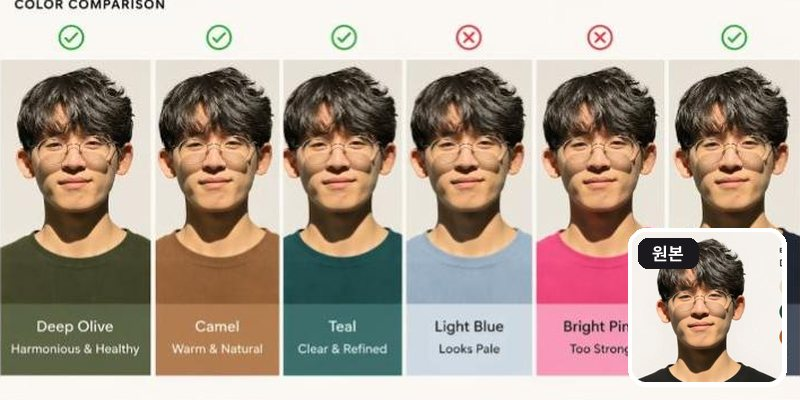
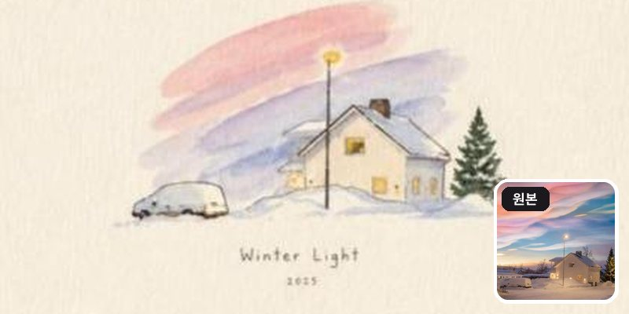
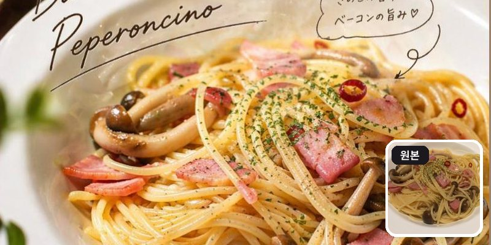
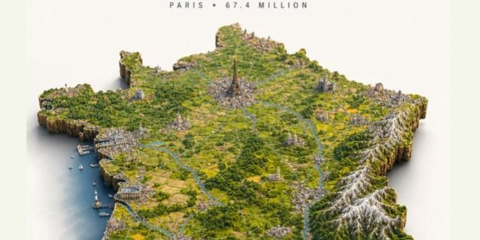
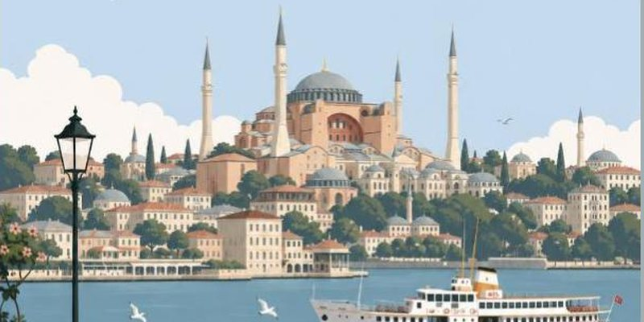
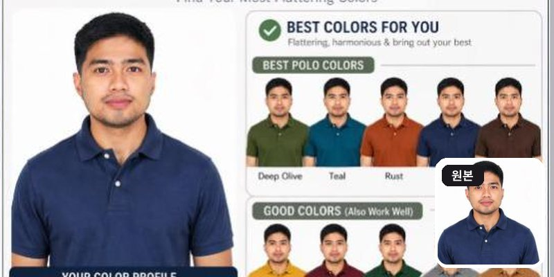
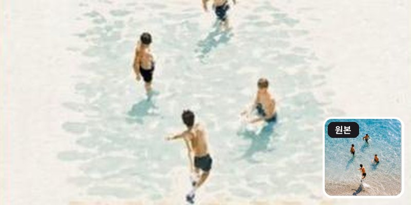
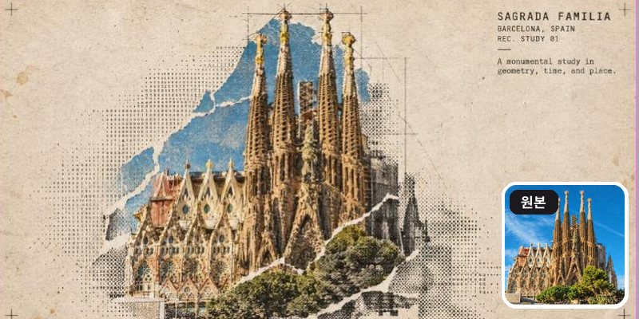
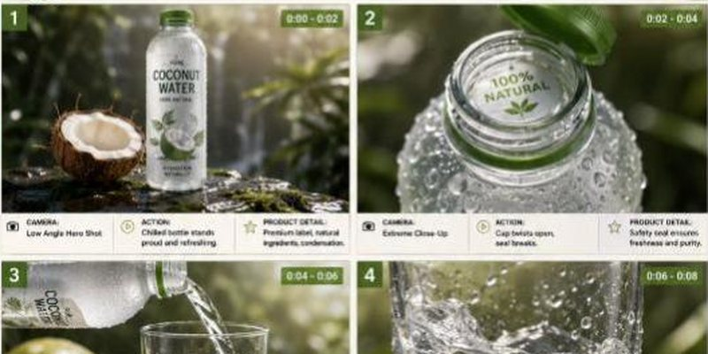
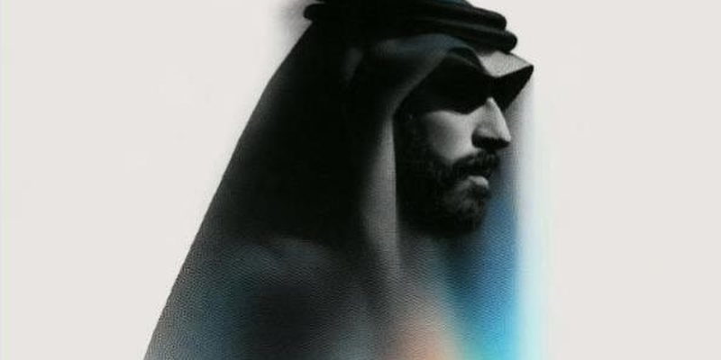

초보 vs 고수, 이미지 프롬프트 5가지 (+보너스 5)
초보는 "수채화로 바꿔줘" 한 줄, 고수는 종이·여백·글씨까지 정해줘요. 해외 크리에이터들이 실제로 쓰고 결과까지 공개한 고수 프롬프트를 릴스 5개 + 보너스 5개로 모았어요. 내 사진을 올리거나 [ ] 부분만 바꿔서 그대로 붙여넣으세요.
- 10개복사용 프롬프트
- 5+5릴스+보너스
- 무료로 시작
이렇게 쓰세요
how to use처음이어도 1분이면 돼요
이렇게 작동해요
- 1AI 열기ChatGPT · Gemini
- 2사진 올리기사진 프롬프트만
- 3프롬프트 붙여넣기[ ]만 바꾸기
- 4마음에 들 때까지"더 밝게" 등 이어서
고수 프롬프트는 길지만 어렵지 않아요. 스타일·구도·색·하지 말 것까지 정해줘서, 같은 AI로도 결과가 확 달라져요. 영어 그대로 붙여넣어도 잘 돼요.
쓰기 전에 꼭
- 어디서 하나요ChatGPT(이미지 생성)·Gemini에서 돼요. 보너스 마지막 1개만 Midjourney 전용이에요
- 사진은 본인 것만다른 사람 얼굴 사진은 허락 없이 올리지 마세요
- 영어 프롬프트 그대로번역하지 않아도 돼요. [ ] 부분만 바꾸면 끝
- 결과는 매번 달라요같은 프롬프트도 조금씩 다르게 나와요. 2~3번 다시 만들어 보세요
고수의 이미지 프롬프트 10개
prompt pack누르면 바로 복사돼요 · 상황별로 골라 쓰세요
🎬 릴스에 나온 5개
릴스 순서 그대로예요 · 1~3번은 사진을 먼저 올리세요

Using this portrait, create a diagram-first personal color analysis. Show which clothing colors suit the subject through visual comparison. Keep text minimal and avoid paragraphs.초보는 “나한테 어울리는 색 알려줘” 한 줄 → 고수는 이렇게. 자연광에서 찍은 사진이 정확해요. 재미로 보고, 실제 진단은 전문가와 함께 · X @AngryTomtweets

Use the uploaded image as the exact visual reference. Recreate the same scene, main subjects, surrounding landscape and objects with the same overall composition and perspective.
Transform the realistic photograph into a delicate hand-painted watercolor illustration on warm off-white textured paper. Preserve the recognizable shapes, placement, proportions, and key details of the original scene while simplifying them naturally into elegant watercolor brushwork. Use soft pastel tones with subtle transparent washes and visible paper texture.
The sky should have beautiful loose watercolor strokes resembling the original sky. Add gentle warm golden light where the original has lights. Shadows should appear soft, layered, and lightly painted.
Create a refined cozy art-print aesthetic, minimal yet atmospheric, with generous blank paper space around the central illustration. Add small elegant handwritten-style typography beneath the artwork reading:
"[짧은 제목, 예: Winter Light]"
"[연도]"
No photorealism, no harsh outlines, no excessive details, no extra objects, clean sophisticated composition, authentic traditional watercolor texture, premium handmade illustration, soft natural imperfections.초보는 “수채화로 바꿔줘” 한 줄 → 고수는 이렇게. 원작 프롬프트를 어떤 사진에도 쓰게 다듬었어요. [ ] 안 문구만 바꾸세요 · X @Alina_with_Ai

이 사진을 프로 사진작가가 찍은 사진처럼 바꿔줘. 인스타그램용이야. 손글씨 문구도 넣어줘.초보는 “사진 보정해줘” 한 줄 → 고수는 이렇게. 원작은 일본어 프롬프트예요(아래 원문). 음식·카페·제품 사진에 특히 잘 돼요. 원문: これをプロカメラマンが撮った写真みたいにする。インスタグラム用。手描き文字も入れる。 · X @dezainaz_ceo

Ultra-detailed photorealistic isometric miniature scale-model diorama of [COUNTRY], floating on a pure off-white studio background with a soft drop shadow beneath. The diorama takes the exact real-world silhouette shape of the country — not a square tile, but the true precise geographic outline of the country's borders and coastline, extruded downward into a thick slab of raw rock and earth with rough natural cliff-like edges, like a chunk of the real land physically cut out and lifted. The shape of the slab matches the country's actual geography precisely, including any islands, peninsulas or coastline indentations.
The entire top surface faithfully recreates the country's real geography and terrain: mountain ranges with correct elevation and snow coverage, rivers in their real positions, major forests and plains, deserts, coastlines with beaches and cliffs. Every major city is visible as a dense urban cluster in its correct geographic position. The country's most iconic landmarks are rendered in accurate positions and to recognizable scale. Terrain elevation is fully physically modeled — mountain ranges rise dramatically, valleys are sunken, plains are flat, creating real varied 3D topography across the entire surface.
Dense micro-detail: individual buildings in city clusters, tiny roads and highways connecting settlements, railways, bridges, harbors with boats, agricultural field patterns in rural areas, individual trees and forest coverage. Every region has its correct landscape character — the terrain of the north looks different from the south.
Style: hyper-realistic tilt-shift miniature photography — extremely sharp, everything in focus across the whole surface, no blur. Soft warm daylight from above, gentle diffuse shadows, rich natural colors. Lush greens, snow-capped peaks, golden plains, deep blue water along the coastline.
Layout: the shaped diorama floats centered in the lower two-thirds of the frame with clear margins on all sides, never touching the frame edges. Upper third is empty off-white space with minimalist editorial typography, centered: small wide-tracked caps with the continent or region name at the very top, then directly below [COUNTRY] in a bold condensed sans-serif in medium charcoal grey — large and dominant, the biggest text element — with a small flat rectangular flag of [COUNTRY] sitting immediately to the right of the country name, vertically centered with it, accurately colored and proportioned, clean flat design, sized to roughly the cap-height of the country name, floating naturally beside the name as one cohesive unit, not pushed to the far edge but sitting close and attached to the right end of the country name text. Then small wide-tracked caps below with the capital city and population.
Minimalist editorial poster aesthetic, premium print quality, 4:5 aspect ratio.초보는 “프랑스 지도 그려줘” 한 줄 → 고수는 이렇게. [COUNTRY]를 KOREA, JAPAN처럼 영어로 바꾸세요 · X @TechieBySA

Premium minimalist flat-vector travel poster for [CITY_NAME], 3:4 vertical format.
Design an original, sophisticated travel poster that captures the authentic visual personality of [CITY_NAME]. The composition must feel purpose-built for this city rather than following a reusable template.
CITY IDENTITY
First interpret the unique visual character of [CITY_NAME] and build the scene around these five elements:
1. A recognizable landmark, architectural feature, or skyline element.
2. A distinctive local way of moving through the city.
3. One subtle everyday lifestyle moment.
4. A native plant, landscape, or environmental characteristic.
5. A composition and viewpoint that naturally belongs to the city.
The overall scene structure must change from city to city. Do not repeatedly use the same object positions or visual formula.
Possible compositions include: harbor viewpoint, narrow historic lane, riverside garden, coastal path, elevated city overlook, lively market passage, tram avenue, ferry terminal, botanical setting, heritage square, beach promenade, cultural plaza, or skyline terrace.
Choose whichever composition best represents [CITY_NAME].
TYPOGRAPHY
Place "[CITY_NAME]" in the upper-left area with generous clean negative space.
Add one short, sophisticated English tagline inspired by the atmosphere of the city.
Typography should feel understated, editorial, spacious, and premium. Never allow text to dominate the artwork.
VISUAL HIERARCHY
Use one iconic landmark or architectural feature as the main focal point.
Support it with only 2–4 carefully selected local elements. Every added detail should strengthen the sense of place.
Avoid landmark collections or postcard-style collages. Keep the scene visually quiet and intentional.
PEOPLE
Include only 3–6 small-scale figures.
Give each person a believable activity connected to local life, such as: walking through a historic lane, cycling, waiting for public transport, sketching architecture, boarding a ferry, reading outdoors, taking a quiet photograph, carrying beach equipment, browsing a market, or jogging beside the water.
Avoid crowds and avoid making any single person the main character. Figures should integrate naturally into the environment.
LOCAL CHARACTER
Use city-specific elements only when they genuinely fit [CITY_NAME]: local transportation, architecture, street furniture, vegetation, small signs or wayfinding, local food references, recreational activities, pavement markings, cultural details.
Transport and signage should remain subtle. Instead of always using a large signboard, incorporate details naturally through a small transit marker, station clock, ferry information panel, bike symbol, painted road marking, beach flag, or understated metro icon.
ART DIRECTION
Japanese stationery-inspired aesthetic, luxury sticker illustration, premium commercial vector artwork, modern editorial travel branding, clean delicate outlines, uniform line weight, simple geometric forms, flat-color illustration, soft shapes, balanced visual rhythm, high-end minimalist postcard design.
COLOR SYSTEM
Build the atmosphere primarily with: pale powder blue, soft sky blue, mist blue, and cool airy blues.
Balance these with: warm ivory, cream, soft beige, muted sage, gray-green, and understated architectural neutrals.
Use dusty rose or muted blush only for tiny visual accents such as flowers, clothing details, small signs, awnings, or decorative objects.
Colors should remain soft, sophisticated, slightly desaturated, and cohesive.
MOOD
Fresh, airy, peaceful, refined, contemporary, elegant.
The final artwork should feel like a premium boutique travel postcard or luxury lifestyle brand illustration, with generous breathing room and a relaxed sense of place.
IMPORTANT QUALITY RULES
Every city must have its own visual identity.
Change the camera angle, scene structure, landmark placement, foreground treatment, and supporting details according to the city's character.
Do not simply replace [CITY_NAME] inside an existing composition.
NEGATIVE PROMPT
No photorealism. No realism. No watercolor. No painterly brushwork. No gradients. No heavy shadows. No dramatic cinematic lighting. No paper texture. No excessive detail. No cluttered background. No landmark collage. No crowded streets. No oversized characters. No dominant hero character. No repetitive café composition. No fixed signboard position. No identical foreground treatment. No generic tourist-poster formula. No copied layout from another city. No unnecessary decorative elements.초보는 “이스탄불 포스터 만들어줘” 한 줄 → 고수는 이렇게. [CITY_NAME]을 Seoul, Busan처럼 바꾸세요. 도시마다 구도가 달라져요 · X @MahnoorAi12
🎁 보너스 5개
릴스엔 없지만 같이 저장해두면 좋은 고수 프롬프트

Create a personal color analysis using this picture. Use polo clothing color comparisons to highlight which colors suit the subject best. Make it visual-first, with explanations and tips
— 헤어스타일 버전 —
Create a hairstyle analysis graphic using this picture. Show side-by-side hairstyles comparisons to highlight which hairstyles suit the subject best. Make it visual-first, with short labels only and details about the haircut정면 상반신 사진이 가장 잘 나와요. 아래 헤어 버전도 같이 해보세요 · X @garenaguinaldox

Create a refined editorial travel-art composition based on a reference photograph. The image is divided vertically into two parts: the upper section is a realistic cinematic travel photograph, while the lower section transforms the exact same scene into a delicate hand-painted watercolor illustration.
Upper section: authentic candid travel photography, natural daylight, soft shadows, subtle film grain, realistic textures, sophisticated European atmosphere, documentary-style composition, people naturally walking through the scene, beautiful architectural details, slightly muted elegant colors, high-end travel magazine photography.
Lower section: a minimalist handmade watercolor painting of the exact same scene, preserving the recognizable composition, architecture, people, poses, perspective and major visual elements from the photograph. Loose translucent watercolor washes, delicate ink details, visible paper texture, soft edges, imperfect brushwork, subtle pigment bleeding, airy negative space, understated pastel tones, artistic but realistic.
Leave generous warm ivory/off-white textured paper space surrounding the watercolor illustration. Add a small elegant handwritten caption near the bottom, such as "summer days" or "a quiet afternoon", with a thin minimalist horizontal line underneath.
Overall aesthetic: luxury travel journal, fine-art watercolor postcard, contemporary editorial design, nostalgic European summer, understated elegance, tactile handmade paper, sophisticated and serene.
Portrait orientation, clean composition, premium art direction, no clutter, no borders, natural proportions, highly detailed photograph transitioning into an airy watercolor illustration.여행 사진에 잘 어울려요. 캡션 문구는 원하는 말로 바꿔도 돼요 · X @KrishnaBio1

Turn this structure photo into a single high-end halftone architectural travel-collage poster. Output one poster per uploaded photo — never merge multiple structures or photos into one frame.
FORMAT
3:4 vertical canvas. Split into two roughly equal zones — real architectural photo on top, printed reconstruction below — divided by one clean, sharp horizontal line.
Do not stretch, warp, tilt, or unnaturally reposition the structure to force the proportions.
TOP HALF — THE REAL SHOT
Preserve the original structure faithfully: same architecture, proportions, perspective, distinctive details, surrounding elements, natural light and shadow, and original color mood.
Keep recognizable features such as: façade, windows and arches, towers or domes, doors and structural details, roofline, surrounding landscape or street elements.
Add only a subtle high-end color grade and the faintest film grain. Do not redesign or reinterpret the architecture.
BOTTOM HALF — THE PRINTED RECONSTRUCTION
Rebuild the same structure as an experimental printed architectural collage using:
torn photographic fragments + fixed-width ASCII character fields + photocopy halftone dots + architectural linework.
The structure must remain immediately recognizable.
* Torn-edge photographic fragments preserve the most important architectural details.
* Brick, stone, glass, metal, shadows, windows, and surrounding textures gradually dissolve outward into ASCII characters, black halftone dots, fragmented print grain, and fine architectural drafting lines.
* Use thin technical construction lines to subtly trace the structure's geometry.
* Let selected areas break apart into paper fibers and halftone fragments, creating the feeling that the building is emerging from an archival print.
* Keep the main silhouette strong and readable.
* Texture: rough white paper-fiber edges, subtle photocopy imperfections, slight print misregistration, faded ink, old-paper stains, a few restrained crop marks, and one small red calibration bar.
* Color: warm gray old-paper background + black ink + the structure's original muted colors + a single restrained red accent.
* Never fully desaturate the structure.
The structure should occupy roughly 60–88% of the frame width, scaled according to what reads best for the architecture.
Leave 22–38% of the paper visibly untouched and empty, creating generous negative space so the poster feels like an archival architectural specimen rather than a packed digital screen.
TYPOGRAPHY
Add one clean, readable fixed-width architectural title based on the structure:
[STRUCTURE NAME]
Below it include:
[CITY, COUNTRY]
REC. STUDY 01
Add one short observational caption related to the architecture, such as:
"A monumental study in geometry, time, and place."
Typography should feel like an old architectural archive mixed with an underground experimental design journal.
A few loose ASCII glyphs may trace the outer silhouette or architectural edges as texture only — never use ASCII to invent windows, doors, structural details, or technical specifications.
MOOD
Early digital systems × analog photocopy × architectural archive × underground zine × modern travel editorial.
The structure should feel like it is surfacing from an old printed document — half photograph, half architectural drawing, half experimental print.
Sophisticated, minimal, tactile, intellectual, slightly mysterious, and highly collectible.
AVOID
Solid black terminal backgrounds, dense walls of code, cyberpunk neon, excessive ASCII, distorted architecture, impossible geometry, invented architectural details, fake technical specifications, random symbols with no meaning, garbled text, excessive colors, brand logos, QR codes, watermarks, author credits, or tourist-poster clichés.
Priority: Preserve the structure's identity and architectural accuracy first. The experimental halftone/ASCII treatment should enhance the architecture, not hide it.건물·랜드마크 사진 1장씩 올리세요. [STRUCTURE NAME], [CITY, COUNTRY]만 바꾸면 돼요 · X @Naiknelofar788

TITLE: Premium [PRODUCT] Product Commercial Storyboard
FORMAT:
• Single-page premium storyboard
• 3:4 Portrait ratio
• Premium natural beverage campaign
• 8 cinematic product-focused scenes
• Product remains the central hero
• High-end advertising agency presentation
HEADER:
• Clean modern typography
• Information cards:
- Duration: 20 Seconds
- Style: Fresh Natural Beverage Commercial
- Product: [PRODUCT]
- Audio: Tropical Water + Refreshing ASMR
• Why This Style Works section
• White, coconut green and natural beige aesthetic
• Minimal tropical decorative accents
STORYBOARD:
1. Chilled [PRODUCT] bottle standing on wet natural stone, covered in condensation
2. Bottle cap opening with a crisp close-up of the seal
3. [PRODUCT] pouring into a transparent glass
4. Clear liquid swirling inside the glass with tiny bubbles
5. Fresh ingredient pieces dropping beside the bottle in slow motion
6. Ice cubes falling into the drink and creating a controlled splash
7. Extreme macro of condensation droplets running down the bottle
8. Final hero bottle and glass surrounded by fresh ingredients and a frozen water splash
EVERY PANEL:
• Scene number
• Duration badge
• Camera direction
• Visual
• Action
• Product detail
CAMERA:
High-speed liquid photography, extreme macro, condensation close-up, slow-motion ice drop, transparent liquid swirl, low-angle product shot, cinematic hero framing.
STYLE:
Ultra-realistic beverage advertising, crystal-clear liquid, realistic condensation, detailed texture, dynamic water splash, natural premium lighting, clean packaging, luxury commercial photography, 8K.원작은 코코넛워터예요. [PRODUCT]를 내 제품으로 바꾸고, 음료가 아니면 장면 1~8도 바꿔보세요 · X @Strength04_X

a halftone black and white simple illustration of a [인물, 예: man in a coat] --ar 3:4 --sref 1589974576 --stylize 400--sref 숫자가 화풍을 고정하는 코드예요. 인물 묘사만 바꾸면 같은 그림체로 나와요 · X @areej_design
꿀팁
tips- 1
결과가 마음에 안 들면 처음부터 다시 쓰지 말고 "배경만 더 밝게", "글자 빼줘"처럼 이어서 고쳐 달라고 하세요.
- 2
긴 프롬프트도 그대로 붙여넣으면 돼요. 스타일·색·하지 말 것을 정해줄수록 결과가 덜 뻔해져요.
- 3
사진을 올리는 프롬프트는 정면·밝은 사진일수록 결과가 좋아요.
- 4
얼굴이 나오는 결과물을 올릴 때는 본인 사진만 쓰세요.
원작·출처
source릴스에 나온 영상과 글의 원본이에요
- 결과는 매번 조금씩 달라요. 마음에 들 때까지 이어서 고쳐 달라고 해보세요.
- 프롬프트 원문은 각 크리에이터의 공개 글에서 가져왔고, 4·9·10번은 쓰기 쉽게 [ ] 부분만 다듬었어요.
- 서비스 이름·메뉴는 2026년 10월 기준이에요.
다른 레시피
more recipes-
No.24NEW따라하기3단계
편집 1년 배워도 못 하던 걸, 프롬프트 한 줄로
펜으로 가리키면 실사가 2D 만화로 — 영상 프롬프트 · Claude + 애프터이펙트
-
No.23따라하기3단계
팔로워 21.9만 AI 인플루언서, 만드는 법 3단계
얼굴 기준 시트 → 같은 얼굴로 새 장소 → 영상으로 꾸준히
-
No.21프롬프트프롬프트 30개
상사한테 칭찬받는 사람들이 몰래 쓰는 AI 문장 30
보고서·메일·회의·엑셀·기획·커리어 복붙 프롬프트
-
No.20툴 추천툴 18개
직장인 AI 18가지, 가격까지 한 장 정리
회의록·PPT·엑셀·조사·번역까지 업무별로
-
No.19따라하기4단계
손바닥 위 포켓베이비 만드는 법
사진 한 장 + ChatGPT + Kling
-
No.18따라하기3단계
ChatGPT에서 Higgsfield로 영상·게임 만드는 법
채팅창에 슬래시(/) 명령어 한 줄